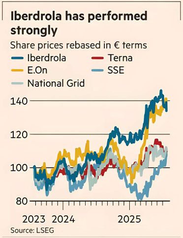

Once may be an accident and twice a coincidence but three times is most definitely a trend. Spanish utility Iberdrola last week joined the UK’s National Grid and Belgium’s Elia in raising money for new investments in electricity grids. The group’s €5bn equity raise will not be the sector’s last.
Electricity networks in Europe and the US need huge investment. In Europe, grids tend to be older. And the continent’s commitment to clean energy — which means more electric vehicles and heat pumps — entails big increases in transmission and distribution capacity.
Overall, European networks will attract €800bn of capital expenditure between 2024 and 2033, Goldman Sachs analysts estimated last year, sharply increasing the asset base on which their regulated returns are calculated. Iberdrola reckons its network assets will increase from more than €51bn at the end of this year to over €90bn by the end of 2031. That’s a 10 per cent compound annual growth rate. The UK and US account for a big chunk of the new investments.
Some utilities will opt for fresh equity because they already run a tight financial ship. Cutting dividends is unpopular with investors in a sector traditionally bought for its defensive qualities and high yields. Iberdrola’s net debt to EBITDA ratio is 3.3 times, Mediobanca said. SSE and E.On are more highly geared on RBC numbers.
The good news is that raising equity to fund growth is not unpopular with investors. National Grid’s huge £7bn rights issue last year caused the stock to crash but it has since recovered. That ought to be especially true for Iberdrola, which thinks regulators will allow it to set tariffs for its networks such that it makes a nominal post-tax return of 9.5 per cent on the new money it has raised.
That allowed it to sell shares in an accelerated bookbuilding at a discount of less than 5 per cent to the previous day’s closing share price last week.
The appeal of companies that build electricity networks in Europe is not yet reflected in their shares, which typically trade at a pedestrian mid-teens multiple of expected earnings.
Utilities in general are defensive with long-term investments and returns set by regulators. But electricity grid builders, given their role in the energy transition, are poised for rapid growth in both assets and earnings. That’s a powerful combination.